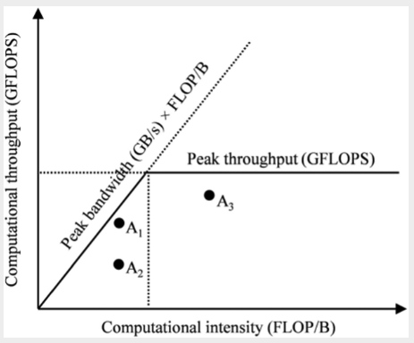

Memory Architecture
This chapter focuses on the memory architecture of GPUs and how to organize and position data for efficient access.
Consider the matrix multiplication code back in chapter 3. This performs a for loop to compute the dot product between a row of M and a column of N.
for (int k = 0; k < Width; ++k) {
Pvalue += M[row*Width + k] * N[k*Width + col];
}
In every iteration of the loop:
- We perform two global memory accesses (for M and N respectively)
- We perform one floating point multiplication and one floating point addition
- The ratio of floating point operation (FLOP) to bytes accessed is
2 FLOP / 8 bytes = 0.25 FLOP/B. This is called arithmetic intensity or computational intensity in the literature.
The compute to global memory access has implications for the performance of a GPU kernel.
- An A100 has peak global memory bandwidth of
1555 GB/s. With0.25 FLOP/B, we can get1555 GB/s * 0.25 FLOP/B = 389 giga FLOPs/s (GLOPS)number of single precision floating point operations. - But A100 has a cap of
19,500 GLOPS, so we are only using2%of the compute capacity! - We are severely limited by memory accesses, and this type of program is called
memory-boundprograms
Roofline Model
The roofline model provides a visual representation of the performance of an application relative to hardware limits.
|  |
|---|
| Roofline model for analyzing GPU efficiency |
The axes meanings:
x-axisis the computational intensity measured inFLOP/B. This quantity is determined by how the application is written.y-axisis the computational throughput, i.e. obtained by multiplying the computational intensity by the maximum memory bandwith of our hardware device (a fixed constant)- The peak throughput horizontal line is the hard cap of the hardware on the peak throughput it can support
The sloping line labelled peak bandwidth represents the hardward limit of the memory bandwidth. The slope is obtained by multipling the current position on the x-axis by the maximum memory bandwidth (say 1555GB/s in the example above), which gives us a slope. We cannot have any point above this line because it would require a memory bandwidth that exceeds the hardware limits.
A point on the plot represents an application with its computational intensity (FLOPS / byte accessed) and computational throughput (FLOPS / s). Note that in real applications, these are measured using programs like NVIDIA NSight using hardware counters. The position of the point relative to the lines tells us its efficiency:
- Points can only be below the two lines, as we cannot exceed hardware limits
- Points closer to the lines are more efficient, as we are nearing hardware limits
Based on the diagram:
- Point is compute bound - it is already quite computationally intensive and near the peak computational throughput, so we need a more powerful GPU to improve it further.
- Point is inefficient - neither memory nor compute bound. It can be improved by improving the memory bandwidth utilization.
- Point is memory bound - it is utilizing memory bandwidth effectively but the compute intensity can be improved. e.g. To fully utilize the
19,500 GLOPSfrom the A100, we need to increase compute efficiency to19,500 (GFLOP/s) / 1,555 (GB/s) = 12.5 FLOP/B. This means that for each single precision floating point number accessed, we need to perform50 FLOPS! This can be achieved for certain applications like matrix multiplication.
CUDA Memory Types
There are different memory types on a GPU with different uses:
- Registers
- Registers are on-chip memory, which means very short latency, high bandwidth access
- Highly limited number of registers per SMs, using too many in kernel code can result in low occupancy
- Allocated to individual threads - each thread can only access its own registers
- Shared memory
- Also on-chip memory, but it resides outside of the Processing Unit
- Accessing data requires a memory load (as opposed to registers), so it is slower than registers, but the memory load is much faster than global memory as it is on-chip
- Allocated to thread blocks - all threads in a block can access shared memory variables
- Global memory
- All threads can access
- Off-chip memory, so relatively high latency and low bandwidth access
- Local memory
- Placed in global memory and has similar access latency
- Not shared across threads
- Each thread has its own section of global memory that it uses as its own private local memory that is private to the thread but cannot be allocated in registers
- e.g. statically allocated arrays
Efficient GPU code requires us to make full use of registers whenever possible:
- Access bandwidth of registers is at least 2 orders of magnitude higher than global memory
- When a variable is stored in registers, its access no longer consume off-chip global memory bandwith, which is reflected as an increased compute to global memory access ratio
- Each access to registers involves fewer instructions than access to global memory due to built-in register operands.
- e.g.
fadd r1, r2, r3directly adds values in registersr2, r3and stores it intor1. There is no loading step - But if the first operand is in the global memory, we need to do an extra loading step
load r2, r4, offset fadd r1, r2, r3 - e.g.
- The energy consumed for accessing a value in the register file is an order of magnitude lower than accessing the value from global memory.
CUDA Syntax
We can declare variables and reside them in the intended type of memory based on our application design.
Scope. Scope identifies the set of threads than can access a variable. If the scope is a single thread, a private version of the variable is created for each thread.
Lifetime. The lifetime is the portion of a program's execution duration when the variable is available, If the lifetime is within a grid's execution, it must be declared within the kernel function. When the kernel is executed multiple times, the value is not maintained across these invocations. If the lifetime is entire application, it must be declared outside of any function body.
Automatic Scalar Variables. All automatic scalar variables declared in the kernel and device functions are automatically placed into registers. This means that a private copy of that variable in generated for every thread that executes the kernel function.
- Scope: Thread
- Lifetime: Grid
Automatic array variables. These are array variables defined in kernel code, such as float buf[128]. Note that the array size must be specified at compile time. These are put into local memory (part of global memory), so access is very slow. In practice, these are seldom used.
- Scope: Thread
- Lifetime: Grid
Shared Memory variables. These are declared in the kernel function and put into shared memory. The scope of a shared variable is in a thread block, so all threads in a block see the same version of a shared variable (and can read and write to it). A private version of the variable is created for each block during kernel execution. Accessing shared variables from the shared memory is extremely fast and highly parallel, and it is a good way for threads in a block to communicate with each other.
- Declaration:
__device__ __shared__ int SharedVar; - Scope: Block
- Lifetime: Grid
Constant Memory variables. These are declared in the host code outside of any function body, and its values cannot be changed by kernel function code. The name is indicative: its usually used for global constants like model parameters or for things like a fixed convolution filter. Constant variables are stored in global memory but are cached for extremely fast and parallel access. The total size of constant variables in an application is limited to 65,536 bytes.
- Declaration:
__device__ __constant__ int ConstVar; - Scope: Grid
- Lifetime: Application
Global Memory variables. These are placed in global memory where access is slow. The advantage of global memory is that it is accessible by all threads and the contents persist throughout the entire application. So it is a way for threads to collaborate across blocks. However, because there is no barrier synchronization method for threads across blocks, usually global variables are used to pass information from one kernel invocation to another kernel.
- Declaration:
__device__ int GlobalVar; - Scope: Grid
- Lifetime: Application
Tiling
The intrinsic memory tradeoff in CUDA is that global memory is large but slow, and shared memory is small but fast. Hence a good strategy is to partition the data into subsets called tiles so that each tile fits into the shared memory.
Consider the matrix multiplication example in chapter 3 where each thread computes one value of the output matrix P = M dot N, and thus access one row of M and one column of N.
- For brevity, define as
M[y*Width + x], asN[y*Width + x], asP[y*Width + x] - Suppose
Width=4and our block size is2 x 2
Now observe that there are duplicate global memory accesses across threads in a block:
- is accessed for computing both and
- is accessed for computing both and
- And so on
Instead of accessing global memory twice, we could have accessed it once, loaded it into shared memory, and then have threads read from shared memory thereafter (almost negligible cost compared to accessing global memory). In fact, a given value (like ) will be accessed block_size times for a given block, so the larger our block size, the more efficient our memory access can be.
We are limited by the size of shared memory, so we need to further tile M and N matrices so that it will fit into shared memory. For simplicity, consider tiling M and N into 2 x 2 tiles also.
Our strategy will now be like so:
- Initialize
2 x 2shared variablesMdsandNds - Load a tile of
MintoMds:- For e.g. the first tile would be
- Load a tile of
NintoNds:- For e.g. the first tile would be
- Launch threads to accumulate partial dot product into thread-specific
Pvalue:- Instead of reading from
MandN, we read the required variables fromMdsandNdsinstead - e.g. computes
- Note that this is a partial dot product for , we need to accumulate to it again
- Instead of reading from
- Move on to the next tile and accumulate to
Pvalueagain:- e.g. Second tile is
- e.g. Second tile is
Note that with this tiling strategy, we will need to do this in multiple steps (or phases) for a given block. In general, we need Width / TILE_WIDTH phases to complete the matrix multiplication.
A tiled matmul kernel
Now we can tackle the matmul kernel.
# define TILE_WIDTH 16
__global__ void matrixMulKernel(float* M, float* N, float* P, int Width) {
__shared__ float Mds[TILE_WIDTH][TILE_WIDTH];
__shared__ float Nds[TILE_WIDTH][TILE_WIDTH];
int bx = blockIdx.x; int by = blockIdx.y;
int tx = threadIdx.x; int ty = threadIdx.y;
// Identify P[Row, Col] to work on
int Row = by * TILE_WIDTH + ty;
int Col = bx * TILE_WIDTH + tx;
float Pvalue = 0;
for (int ph = 0; ph < Width/TILE_WIDTH; ++ph) {
// Load M, N into shared memory
Mds[ty][tx] = M[Row*Width + ph*TILE_WIDTH + tx];
Nds[ty][tx] = N[(ph*TILE_WIDTH + ty)*Width + Col];
__syncthreads();
for (int k = 0; k < TILE_WIDTH; ++k) {
Pvalue += Mds[ty][k] * Nds[k][tx];
}
__syncthreads();
}
P[Row*Width + Col] = Pvalue;
}
Notes on the above:
Mds, Ndsare shared variables that are common for all threads in a block- Since each thread is working on one element of output
P, we findRowandColrespectively (to computeP[Row, Col])- Note that the algorithm assumes each block computes exactly one tile, so
TILE_WIDTH = BLOCK_SIZE - Therefore
Row = by * TILE_WIDTH + ty - And
Col = bx * TILE_WIDTH + tx
- Note that the algorithm assumes each block computes exactly one tile, so
Now we tackle the for loop part which loops through the phase counter ph.
- Recall that each phase uses one tile of
Mand one tile ofN. - The phase counter
phtells us how many phases we have already processed
Loading Data into Shared Memory
For each phase, we first load data into shared memory:
- Each thread loads one value of
Mnad one value ofNinto shared memory - Since we have
TILE_WIDTH x TILE_WIDTHnumber of threads per block, in each phase we load this many elements intoMdsandNdsrespectively
Which data should each thread load?
- For
M:- Note that
Rowalready gives us the row ofMto be loaded for this thread (constant across phases) - The beginning column for this block and phase is
ph * TILE_WIDTH, because we have processedphnumber of tiles to the left - So we want
M[Row, ph*TILE_WIDTH], which is indexed asM[Row*Width + ph*TILE_WIDTH + tx]in row major form
- Note that
- For
N:Colalready gives us the column ofNto be loaded for this thread (constant across phases)- The beginning row for this block and phase is
ph * TILE_WIDTH - So we want
N[ph*TILE_WIDTH + ty, Col], which is indexed asN[(ph*TILE_WIDTH + ty)*Width + Col]
Finally, we call __syncthreads() barrier synchronization. This is necessary because for the computation phase, each thread requires values of Mds,Nds that other threads have loaded for it. Hence we must make sure all threads have loaded into shared memory before we proceed to compute.
- This is called read-after-write synchronization - we require data to be written before we can read from it
- Also called true dependence because there is truly a dependence from the reader on the written data
Computation Phase
Now we have loaded the requisite data into Mds and Nds, we can accumulate into Pvalue. The tiled matmul is such that we accumulate into Pvalue as though we were just doing a simple dot product between Mds and Nds. This compute phase is very fast as we are reading from shared memory.
Finally, another __syncthreads() is called. This is to ensure that computation has completed before we start loading values into Mds and Nds in the next phase, overwriting their values.
- This is called write-after-read synchronization - threads must wait for data to be read by all threads that need it before overwriting it
- Another name is false dependence. The dependence is false because the writing thread actually does not need any data from the reading thread - the dependence occurs purely because they are sharing the same memory location.
Summary
The savings from tiled matmul is significant. With 16 x 16 tiles, we reduce global memory access by a factor of 16, which brings our 0.25 FLOP/B to 4 FLOP/B. There are further optimizations we can make later.
Boundary Checks
In the previous section, we assume that Width is a multiple of TILE_WIDTH. This section extends it to handle arbitrary matrix sizes. As with before, we need to add boundary checks to avoid accessing non-existent values or even accessing wrong values that corrupt the final output.
The modified kernel code is shown (only the for loop part):
float Pvalue = 0;
for (int ph = 0; ph < ceil(Width/(float) TILE_WIDTH); ++ph) {
if ((Row < Width) && (ph*TILE_WIDTH+tx) < Width)
Mds[ty][tx] = M[Row*Width + ph*TILE_WIDTH + tx];
else Mds[ty][tx] = 0.0f;
if ((ph*TILE_WIDTH+ty) < Width && Col < Width)
Nds[ty][tx] = N[(ph*TILE_WIDTH+ty)*Width + Col];
else Nds[ty][tx] = 0.0f;
__syncthreads();
for (int k = 0; k < TILE_WIDTH; ++k) {
Pvalue += Mds[ty][k] * Nds[k][tx];
}
__syncthreads();
}
if (Row < Width) && (Col < Width)
P[Row*Width + Col] = Pvalue;
For boundary checks on M:
- As we recall, the
yandxelement accessed areRowandph*TILE_WIDTH + txrespectively - Hence we just need to check if both of these are less than
Width
For boundary checks on N:
- The
yandxelement accessed are(ph*TILE_WIDTH+ty)andColrespectively - Hence we just need to check if both of these are less than
Width
For accessing M and N, if we are accessing an out of bounds value, simply load 0.0 into Mds and Nds respectively. This will ensure that when accumulating into Pvalue, using an out of bound value will result in adding 0.0 and hence not affect the final output.
Finally when assigning values into P, we just check if Row, Col are within bounds.
Impact of Memory Use on Occupancy
Earlier on we saw that register usage can reduce occupancy. Similarly, using too much shared memory can reduce the number of blocks assigned and hence reduce occupancy.
For example, an A100 can have up to 164KB of shared memory per SM and support a maximum of 2048 threads per SM.
- This means that to use up all thread slots, a thread block cannot use more than an average of
164 KB / 2048 threads = 82B / thread
For our tiled matmul example:
- Each block has
TILE_WIDTH * TILE_WIDTHthreads per block - Each block uses
4B * TILE_WIDTH * TILE_WIDTHshared memory forMdsandNdsrespectively - So it uses
8Bper thread, which is less than82Band we are fine
But consider a kernel that uses 32KB of shared memory, and each block has 256 threads.
- Then each thread uses on average
32KB / 256 = 128B. This exceeds the82B/threadlimit. - So we can only launch at most
164KB / 128B = 1.3k threads, which is around60%occupancy
Dynamic sizing of shared memory
Since the size of shared memory on an SM is device specific, we want the host code to dynamically adjust the TILE_WIDTH and hence amount of shared memory used by a kernel.
- This can be done using
cudaGetDeviceProperties, and usingdevProp.sharedMemPerBlockto give the amount of shared memory available in each SM.
Unfortunately, we cannot specify Mds and Nds as before using TILE_WIDTH, because the value of TILE_WIDTH must be available at compile time. If we want to change this value, we must recompile the code.
The workaround for such a scenario is to use extern __shared__ Mds_Nds[]; inside the kernel code. This allows for a dynamically allocated shared array.
- However, since we only have one merged array, we'll need to manually define where
Mdsends andNdsstarts - We also need to linearize our access to the array
At runtime, we can dynamically configure the amount of shared memory for each block using the third configuration parameter for a kernel call:
size_t size = calculate_appropriate_SM_usage(devProp.sharedMemPerBlock, ...);
matrixMulKernel<<<dimGrid,dimBlock,size>>>(Md, Nd, Pd, Width, size/2, size/2);
Notes:
- Note that
size_tis a built-in type for declaring a variable to hold the size information for dynamically allocated data structures, in number of bytes. - Also note that we pass
size/2for the size ofMdsandNdsrespectively
The kernel code can then be modified to accommodate the new structure:
#define TILE_WIDTH 16
__global__ void matrixMulKernel(float* M, float* N, float* P, int Width,
unsigned Mdz_sz, unsigned Nds_sz) {
extern __shared__ char float Mds_Nds[];
float *Mds = (float*) Mds_Nds;
float *Nds = Mds_Nds + Nds_sz;
}
Note that we would need to use linearized accesses to Mds and Nds. e.g. Mds[ty][tx] becomes Mds[ty*TILE_WIDTH+tx].
Exercises
- Consider matrix addition. Can one use shared memory to reduce the global memory bandwidth consumption? Hint: Analyze the elements that are accessed by each thread and see whether there is any commonality between threads.
No - each element of input matrices A + B are accessed exactly once, so no memory savings.
- Draw the equivalent of Fig. 5.7 for a 8×8 matrix multiplication with 2×2 tiling and 4×4 tiling. Verify that the reduction in global memory bandwidth is indeed proportional to the dimension size of the tiles.
- With 2x2 tiling, there are 4 phases, so each element gets accessed from global memory 4x
- With 4x4 tiling, there are 2 phases, so each element gets accessed from global memory 2x
- So the reduction in memory bandwidth is proportional to the tile size
With 2x2 tiling, each element gets accessed twice per phase. With 4x4 tiling, each element gets accessed 4x per phase. So the reduction in global memory bandwidth is scaled accordingly.
- What type of incorrect execution behavior can happen if one forgot to use one or both __syncthreads() in the kernel of Fig. 5.9?
This is the tiled matrix multiplication code.
- If we miss the first
__syncthreads, we could get "read-before-write" situations where another thread tries to load the values ofMdsorNdsbefore it is written. This leads to wrong outputs. - If we miss the second
__syncthreads, we could get "write-before-read" situations, where another thread has already overwritten the values ofMdsorNdsin the next phase before we have read from it. This leads to wrong outputs.
- Assuming that capacity is not an issue for registers or shared memory, give one important reason why it would be valuable to use shared memory instead of registers to hold values fetched from global memory? Explain your answer.
Threads in the same block can access the shared memory, so we can benefit as long as our application requires multiple threads to access the same values. Registers are private to each thread and we cannot benefit.
- For our tiled matrix-matrix multiplication kernel, if we use a 32×32 tile, what is the reduction of memory bandwidth usage for input matrices M and N?
32x
- Assume that a CUDA kernel is launched with 1000 thread blocks, each of which has 512 threads. If a variable is declared as a local variable in the kernel, how many versions of the variable will be created through the lifetime of the execution of the kernel?
512,000
- In the previous question, if a variable is declared as a shared memory variable, how many versions of the variable will be created through the lifetime of the execution of the kernel?
1000
- Consider performing a matrix multiplication of two input matrices with dimensions N×N. How many times is each element in the input matrices requested from global memory when: a. There is no tiling? b. Tiles of size T×T are used?
Easier to reason about total number of accesses:
- With no tiling, each thread accesses
2Nelements and there areNxNthreads, so2N^3 - With tiling, each block accesses
2TNelements, and there areN/T * N/Tblocks, so2N^3/Taccesses
- A kernel performs 36 floating-point operations and seven 32-bit global memory accesses per thread. For each of the following device properties, indicate whether this kernel is compute-bound or memory-bound. a. Peak FLOPS=200 GFLOPS, peak memory bandwidth=100 GB/second b. Peak FLOPS=300 GFLOPS, peak memory bandwidth=250 GB/second
The computational intensity is 36 FLOP / (7 * 4B) = 1.3 FLOP/B
- With peak memory bandwidth of
100 GB/s, our throughput is1.3 (FLOP/B) * (100 GB/s) = 130 GFLOPS. This means we are memory bound as we are not hitting peak FLOPS - With peak memory bandwidth of
250 GB/s, our throughput is1.3 (FLOP/B) * (250 GB/s) = 325 GLOPS. This means we are compute bound as we have hit peak FLOPS
- To manipulate tiles, a new CUDA programmer has written a device kernel that will transpose each tile in a matrix. The tiles are of size BLOCK_WIDTH by BLOCK_WIDTH, and each of the dimensions of matrix A is known to be a multiple of BLOCK_WIDTH. The kernel invocation and code are shown below. BLOCK_WIDTH is known at compile time and could be set anywhere from 1 to 20.
01 dim3 blockDim(BLOCK_WIDTH, BLOCK_WIDTH);
02 dim3 gridDim(A_width/blockDim.x, A_height/blockDim.y);
03 BlockTranspose<<<gridDim, blockDim>>>(A, A_width, A_height);
04 __global__ void
05 BlockTranspose(float* A_elements, int A_width, int A_height)
06 {
07 __shared__ float blockA[BLOCK_WIDTH][BLOCK_WIDTH];
08 int baseIdx = blockIdx.x * BLOCK_WIDTH + threadIdx.x;
09 baseIdx += (blockIdx.y * BLOCK_WIDTH + threadIdx.y) * A_width;
10 blockA[threadIdx.y][threadIdx.x] = A_elements[baseIdx];
11 A_elements[baseIdx] = blockA[threadIdx.x][threadIdx.y];
12 }
a. Out of the possible range of values for BLOCK_WIDTH, for what values of BLOCK_WIDTH will this kernel function execute correctly on the device?
The code works like so:
- Each thread handles an element of
A - The tile / block size is
BLOCK_WIDTH - For each thread:
threadIdx.xandthreadIdx.ygive thex,ycoordinates within a block- We wish to swap these elements by temporarily assigning into
blockA
- What is the index of the element we are accessing?
- The
yindex inAwould beblockIdx.y * BLOCK_WIDTH + threadIdx.y - The
xindex inAwould beblockIdx.x * BLOCK_WIDTH + threadIdx.x - So the serialized form is
y*A_width + xas shown in the code
- The
The problem with the code is that we have a potential "write-before-read" situation in line 10-11:
- Consider
thread1: threadIdx.y=i, threadIdx.x=jandthread2: threadIdx.y=j, threadIdx.x=iwhich are two threads in mirror coordinates to each other - It is possible that
thread1completes the transpose operation beforethread2and writes intoA_elementsbeforethread2reads - Then, we end up with
thread1andthread2writing the same value into their designated slots which is incorrect
The only BLOCK_WIDTH value which works is 1.
b. If the code does not execute correctly for all BLOCK_SIZE values, what is the root cause of this incorrect execution behavior? Suggest a fix to the code to make it work for all BLOCK_SIZE values.
Add a __syncthreads() between lines 10 and 11.
- Consider the following CUDA kernel and the corresponding host function that calls it:
01 __global__ void foo_kernel(float* a, float* b) {
02 unsigned int i = blockIdx.x * blockDim.x + threadIdx.x;
03 float x[4];
04 __shared__ float y_s;
05 __shared__ float b_s[128];
06 for (unsigned int j = 0; j < 4; ++j) {
07 x[j] = a[j * blockDim.x * gridDim.x + i];
08 }
09 if (threadIdx.x == 0) {
10 y_s = 7.4f;
11 }
12 b_s[threadIdx.x] = b[i];
13 __syncthreads();
14 b[i] = 2.5f * x[0] + 3.7f * x[1] + 6.3f * x[2] + 8.5f * x[3]
15 + y_s * b_s[threadIdx.x] + b_s[(threadIdx.x + 3) % 128];
16 }
17
18 void foo(int* a_d, int* b_d) {
19 unsigned int N = 1024;
20 foo_kernel<<< (N + 128 - 1) / 128, 128 >>>(a_d, b_d);
21 }
a. How many versions of the variable i are there?
i is private to each thread, so 1024 copies.
b. How many versions of the array x[] are there?
x[4] is a local memory variable and private to each thread, so 1024 copies.
c. How many versions of the variable y_s are there?
y_s is a shared memory variable, one per block, so 8 copies.
d. How many versions of the array b_s[] are there?
b_s is also shared memory, so 8 copies.
e. What is the amount of shared memory used per block (in bytes)?
We have (128 + 1) * 4B = 516B.
f. What is the floating-point to global memory access ratio of the kernel (in OP/B)?
There are 6 memory accesses, so 24B in each thread:
- Line 7 has
4loads - Line 12 has
1load - Line 14 has
1store
There are 10 floating point operations on lines 14 and 15:
5multiplications5additions
So FLOP/B is 10 / 24 = 0.42 FLOP/B.
- Consider a GPU with the following hardware limits: 2048 threads/SM, 32 blocks/SM, 64K (65,536) registers/SM, and 96 KB of shared memory/SM. For each of the following kernel characteristics, specify whether the kernel can achieve full occupancy. If not, specify the limiting factor.
a. The kernel uses 64 threads/block, 27 registers/thread, and 4 KB of shared memory/block.
Checks:
- Total threads:
64 threads/block * 32 blocks = 2048. Hits thread limits ✔ - Shared memory: given shared memory limits, we can only have
96KB / 4KB = 24 blocks. So occupancy can only be 75%. ✖ - Registers:
27 * 2048 = 55,296. Within limits ✔
Cannot reach full occupancy due to shared memory usage.
b. The kernel uses 256 threads/block, 31 registers/thread, and 8 KB of shared memory/block.
Checks:
- Total threads:
256 threads/block * 8 blocks = 2048. Hits thread limits ✔ - Shared memory: given shared memory limits, we have
96KB / 8KB = 12 blocks. So we can have 8 blocks no problem. ✔ - Registers:
31 * 2048 = 63,488. Within limits ✔
Can reach full occupancy.